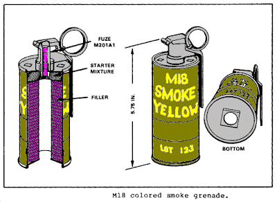
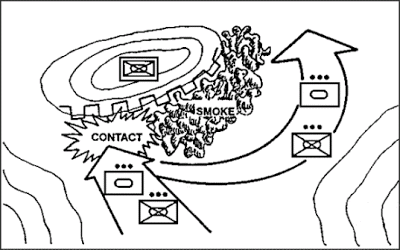
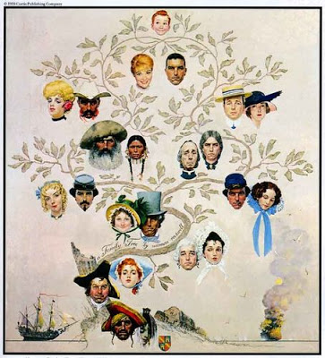
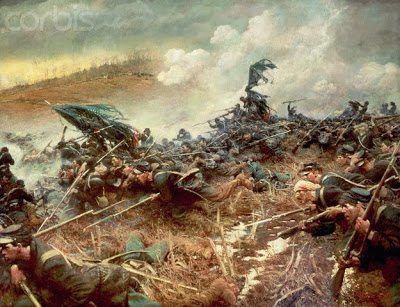
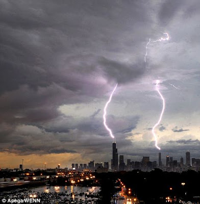

The storming of the Bastille, 14 July 1789.
Where Did the Tea-Party Anger Come From?
Wednesday, June 30, 2010
Who benefits from the McDonald decision? Also, I unload on a Fudd. First the firearms, then the liberty.
Why Democrats, of course.
Here's the first few paragraphs of the Politico story:
"Everybody agrees that it’s subject to regulation," huh? Well, not everybody.
Yesterday I had a bit of verbal tussle with a guy in a gun shop who was enthused over McDonald. He was waxing eloquent about how "the NRA" had saved "our Second Amendment rights." After I set him straight about the odious nature of the NRA's real actions in this case versus the Second Amendment Foundation, he admitted he hadn't known that. He just assumed that the NRA MUST have been behind the legal challenge, because, well, they were the NRA and wasn't that what they did?
Then he screwed up and offered this gem: "Well, at least the Supreme Court has guaranteed our Second Amendment rights."
I unloaded on him in words to this effect:
"Look, your right to self-defense, your right to arms, is natural and God-given. The most that any scrap of paper can do is codify that fact. The Second Amendment doesn't "guarantee" anything. The Supreme Court doesn't "guarantee" anything. Do you know what does?"
"God?" he offered.
"No, not God. The rights come from God but they're not guaranteed by Him."
I snatched a rifle off the display rack in the middle of the shop and held it at port arms.
"This. This, and millions like it in the hands of citizens willing to use them to defend their liberty and property against free-lance criminals or tyrannical governments. It is those millions of rifles and the will to use them that secures our liberties in this country. First comes the military fact of the firearms in the hands of citizens, then follows the legal niceties of the liberty recognized after the fact by politicians. Without the one, tyrants don't respect the other. Remember that."
And without another word, I replaced the rifle in the rack, picked up my cane and gimped out of the store.
The McDonald decision, like the Heller decision before it, means exactly dick in the grand scheme of things. Liberty is secured by free men who are willing to kill for it and who hold the means to accomplish that in their own hands.
Everything else is eyewash.
Here's the first few paragraphs of the Politico story:
When the Supreme Court extended the individual right to own a gun Monday, it handed Second Amendment advocates — many of whom are at home in the GOP — one of their most significant legal victories ever.
But who won the day in politics? The Democrats.
For them, the court’s groundbreaking decision couldn’t have been more beneficial to the cause in November. Now, Democratic candidates across the map figure they have one less issue to worry about on the campaign trail. And they won’t have to defend Republican attacks over gun rights and an angry, energized base of gun owners.
“It removes guns as a political issue because everyone now agrees that the Second Amendment is an individual right, and everybody agrees that it’s subject to regulation,” said Lanae Erickson, deputy director of the culture program at centrist think tank Third Way.
A House Democratic aide agreed that the court’s decision removed a potentially combustible element from the mix.
“The Supreme Court ruled here that you have a fundamental right to own and bear arms, and that means at the national level it’s harder — whether it’s Republicans or whether it’s the [National Rifle Association] — to throw that claim out: If Democrats are in charge. they’re going to come get your guns,” said the aide. “It pretty much took that off the table.”
"Everybody agrees that it’s subject to regulation," huh? Well, not everybody.
Yesterday I had a bit of verbal tussle with a guy in a gun shop who was enthused over McDonald. He was waxing eloquent about how "the NRA" had saved "our Second Amendment rights." After I set him straight about the odious nature of the NRA's real actions in this case versus the Second Amendment Foundation, he admitted he hadn't known that. He just assumed that the NRA MUST have been behind the legal challenge, because, well, they were the NRA and wasn't that what they did?
Then he screwed up and offered this gem: "Well, at least the Supreme Court has guaranteed our Second Amendment rights."
I unloaded on him in words to this effect:
"Look, your right to self-defense, your right to arms, is natural and God-given. The most that any scrap of paper can do is codify that fact. The Second Amendment doesn't "guarantee" anything. The Supreme Court doesn't "guarantee" anything. Do you know what does?"
"God?" he offered.
"No, not God. The rights come from God but they're not guaranteed by Him."
I snatched a rifle off the display rack in the middle of the shop and held it at port arms.
"This. This, and millions like it in the hands of citizens willing to use them to defend their liberty and property against free-lance criminals or tyrannical governments. It is those millions of rifles and the will to use them that secures our liberties in this country. First comes the military fact of the firearms in the hands of citizens, then follows the legal niceties of the liberty recognized after the fact by politicians. Without the one, tyrants don't respect the other. Remember that."
And without another word, I replaced the rifle in the rack, picked up my cane and gimped out of the store.
The McDonald decision, like the Heller decision before it, means exactly dick in the grand scheme of things. Liberty is secured by free men who are willing to kill for it and who hold the means to accomplish that in their own hands.
Everything else is eyewash.


Tuesday, June 29, 2010
Praxis: Smoke Grenades


From the Trainer:
Mike,
Something for folks to consider:
Using pyrotechnics during training or during an engagement has pros and cons, just like anything else. Smoke grenades are legal, expensive, and have varying quality.
Each man should consider having at least one, preferably two smoke grenades (one of each color). The colors we find most effective are:
White HC - Good for night, inclement weather, urban, and winter environments. Best all-around color to get. Plain old white HC.
Green - Superb for the woods. Depending on the time of year, rotary/fixed wing aircraft have a very difficult time seeing the green smoke against the canopy of leaves, depending, of course, on the AO in question.


Why 2 each? Simply, two different applications, and if one needs to, one can use either color in an emergency.
Cost? Anywhere from $40 to $100 each, depending on what you get, so watch yourself.
www.ammunitiontogo.com has some very good quality and cost wise, at the low end. They're military spec and will give you enough smoke for a good contact break. Recommend the "triple action" white HC as you can loft these and they pop into three separate sections to spread your cover out. http://www.ammunitiontogo.com/catalog1/product_info.php/pName/1-us-milspec-triple-action-white-smoke-grenade
The product description from Ammunition-to-go:
1 - U.S. Mil-Spec Triple Action WHITE Smoke Grenade
[ALSG973] $49.95
This is a U.S. Mil-Spec. Triple Action White smoke Grenade. These smoke grenades are manufactured by A.L.S. Technologies, and are currently being used by our military in Iraq. The Tri-Action, White Smoke Grenade is a hand thrown device that releases three separate sub-munitions on discharge. The sub-munitions will separate between 15' and 20' apart, giving a wide coverage area per sub-munition. The ALS G973 is extremely effective in creating diversions for tactical operations.The Triple Action White Smoke Grenade delivers a cloud of white Smoke for approximately 30 seconds per sub-munition. These Grenades are used for training and screening purposes and are also very effective in creating a diversion for certain tactical operations. These smoke grenades are great for the paintball field when a wide range of cover is needed. These smoke grenades require the user to be able to throw them high enough for it to separate in the air. If the smoke grenade hits the ground before it separates it may not work properly. This is not something that is hard to do, you just have to throw them high and away from you.
Also recommend the Green single stage as number 2. They have multiple purchase prices as well, so you can save a penny or two.
When training with smoke, suffice it to say that wind consciousness is important because you don't want to pop smoke and then have it not shield your movement. Also, you must remember that depending on your location, elevation, situation, etc, once you pop smoke, you have to move quickly, because you may just have told everyone looking for you exactly where you are.
In a recent FTX, an OPFOR team used smoke at night to further hamper visibility of the target and was able to successfully get into a couple of positions before compromise. The participants later stated that hearing the smoke pop and then smelling it worked like a two-edged sword: enhancement of anxiety knowing that penetration was occurring and confidence in that the sound of the smoke would help pinpoint the OPFOR area of movement. -- The Trainer.
The NRA Judenrat rides again in the Kagan nomination -- and yes, they're trying to give her political cover, the ass lickers.
 Herr General Arschlecker, aka Sebastian Snowflake, chief NRA Internet Apologist and Judenraten.
Herr General Arschlecker, aka Sebastian Snowflake, chief NRA Internet Apologist and Judenraten.Judenräte (singular Judenrat; German for "Jewish council") were administrative bodies that the Germans required Jews to form in the German occupied territory of Poland, and later in the occupied territories of the Soviet Union.
The first Judenräte were formed by Reinhard Heydrich's orders on September 21, 1939, soon after the end of the German assault on Poland.
The Judenrat served as a liaison between the German occupying authorities and the Jewish communities under occupation. The Judenrat operated pre-existing Jewish communal properties such as hospitals, soup kitchens, day care centers, and vocational schools.
With the formation of ghettos, these bodies became responsible for local government in the ghetto, and stood between the Nazis and the ghetto population. They were generally composed of leaders of the pre-war Jewish community (with the exception of the Soviet Union, where Jewish organizations were eliminated in 1930s). They were forced by the Nazis to provide Jews for use as slave labor, and to assist in the deportation of Jews to extermination camps during the Holocaust. Those who refused to follow Nazi orders or were unable to cooperate fully were frequently rounded up and shot or deported to the extermination camps themselves.
In a number of cases, such as the Minsk ghetto and the Łachwa ghetto, Judenrats cooperated with the resistance movement. In other cases, Judenrats collaborated with the Nazis, on the basis that cooperation might save the lives of the ghetto inhabitants. -- Wikipedia.
David Codrea's take on the latest ride of the NRA Judenrat.
Here is General Sebastian Snowflake's inevitable apologia for the latest NRA asslicking of the Obamanoids. I guess that makes him an asslicker's asslicker. Or as the Germans would say "Arschlecker."


Monday, June 28, 2010
McDonald v. Chicago decision is in. So what?
The decision is here.
So, I have skimmed it. We get incorporation, but -- a la Heller -- Alito assures the restrictionists they can still play games WITH A CONSTITUTIONAL RIGHT. The Brady Bunch press release hit hard on THAT, you may be assured. So hold the hosannahs and hallelujahs. The fight goes on.
So, I have skimmed it. We get incorporation, but -- a la Heller -- Alito assures the restrictionists they can still play games WITH A CONSTITUTIONAL RIGHT. The Brady Bunch press release hit hard on THAT, you may be assured. So hold the hosannahs and hallelujahs. The fight goes on.
Sunday, June 27, 2010
The Nation Makers
One of my favorite Howard Pyle paintings.
Here's another:
And another:

Here's another:


American Family Tree.And another:


Charge of the Minnesotans at Nashville, 1864.Deception in War: Pyle's Hacking Match
 The deception which opened the way for Light Horse Harry Lee and "Pyle's Hacking Match."
The deception which opened the way for Light Horse Harry Lee and "Pyle's Hacking Match."So this morning I was doing some quick reading about the Battle of Guilford Courthouse, where the RTC rally is being held in August and I ran across mention of "Pyle's Hacking Match." Intrigued because I had never heard of it, I did some quick searching.
Here's Wikipedia:
Pyle's Massacre, also known as Pyle's Hacking Match, was a battle that took place during the American Revolutionary War in Orange County, North Carolina (present-day Alamance County, North Carolina), on February 24, 1781, between Patriot and Loyalist North Carolina militia troops.
Background
Dr. John Pyle, Sr., a native of Chatham County, had previously fought against the colonial government in the War of the Regulation but did not serve at the Battle of Alamance. After the battle, however, Pyle responded to General Charles Cornwallis' call for Loyalists in the Revolution, and he served in the militia against the American Patriots as a colonel. After being captured, Dr. Pyle took an oath of loyalty to the Provincial Congress. However, with General Cornwallis' army encamped at nearby Hillsborough, Dr. Pyle gathered between 300 and 400 troops and sent a request to Cornwallis for an escort. Cornwallis sent Banastre Tarleton with his cavalry and a small band of infantry to escort these men.
At the same time, Lieutenant Colonel Henry "Light Horse Harry" Lee—father of Robert E. Lee—and Brigadier General Andrew Pickens were in the area with orders to harass the enemy. They had sent out scouts to locate Pyle's army. Upon learning of their location, they made plans to rendezvous with those forces with the objective of attacking Tarleton's dragoons and infantry, which would deal a major blow to Cornwallis.
At noon on February 24, Lee and Pickens captured 2 British staff officers and learned through interrogation that Tarleton was only a few miles ahead. In the waning hours of the day, Lee's Legion, who wore short green jackets and plumed helmets, encountered 2 of Pyle's men, who mistook them for Tarleton's dragoons who wore similar uniforms. Lee used this confusion to his advantage and learned that Pyle's army was located nearby. Lee's troops trotted into the camp in full salute. Lee exchanged customary civilities with Colonel Pyle and began shaking his hand when the sounds of battle commenced.
Battle
The most commonly accepted account of the battle, pieced together from reports from Lee and Captain Joseph Graham, indicates that Lee's deception was purely chance, and that he had originally intended to avoid the Loyalists, intending instead to encounter Tarleton's Dragoons, the more important objective. The sounds of battle apparently commenced when the militia at the rear of Lee's Legion, recognizing the strips of red cloth on the hats of Pyle's men as the badge of Loyalists, alerted Captain Eggleston, who was new to the South and was not familiar with local Whig and Tory badges. When he asked one of the Loyalists which side he was on, the man replied "King George," and Eggleston responded by striking him on the head with his sabre. Seeing this, the militia joined in the attack. The Loyalists, believing the attack to be a mistake, continued insisting they were on King George's side, to no avail. After 10 minutes, the remaining Loyalists had fled, and ninety-three Loyalists were known to be dead, certainly more were wounded and others were seen being carried off by friends. According to local legend, John Pyle was badly wounded in the battle and crawled into a nearby pond where he concealed himself until he could be rescued. After recovering from his wounds, he surrendered to the local militia. Later they were pardoned as a result of Pyle's care for wounded patriots.
Aftermath
Lee's and Pickens' ultimate goal of encountering Tarleton was foiled when Tarleton received orders on the night of February 24 ordering him to return to rejoin the main army. Though pursued, Tarleton eventually got too close to the main British army for Pickens and Lee to attack safely.
The British were quick to denounce the massacre. Cornwallis, in a letter to Lord George Germain, reported that most of Pyle's force were "inhumanly butchered, when begging for quarters, without making the least resistance."
The battle occurred a few weeks before the Battle of Guilford Courthouse and was a contributing factor in weakening British troop numbers and morale as that battle approached.
As late as 1850, local residents could point out the location of the battle and of the mass graves of those killed during the skirmish; at least one alleged known mass grave has been recently relocated. The site is marked with periwinkle and cedar trees and at one time had a stone marker (placed in 1880), which has since been removed from the site; the marker's current location is unknown.
Saturday, June 26, 2010
"Purifying the World" -- the latest collectivist hogwash about purging the world of evil and the perfectibility of man.
The Bolsheviks believed in the perfectibility of man. They called their ideal "The New Soviet Man."
The Nazis believed in the "purification of the race." Their model was the Aryan warrior. Their version of "The New Soviet Man" was the
herrenvolk -- "the Master Race."
Both variants of collectivism stacked up millions upon millions of bodies trying to achieve their view of perfection, of "purification."
 The natural by-products of collectivist "perfectibility" and "purification."
The natural by-products of collectivist "perfectibility" and "purification."
Courtesy of Pete at WRSA we have this link to an article in American Thinker which refers to this article on the "Purificationist" collectivism of today.
As Pete asks, "do you understand yet?"

Man will make it his purpose to master his own feelings, to raise his instincts to the heights of consciousness, to make them transparent, to extend the wires of his will into hidden recesses, and thereby to raise himself to a new plane, to create a higher social biologic type, or, if you please, a superman. -- Leon Trotsky, Literature and Revolution, on "the New Soviet Man."
The Nazis believed in the "purification of the race." Their model was the Aryan warrior. Their version of "The New Soviet Man" was the

herrenvolk -- "the Master Race."
Blood mixture and the result drop in the racial level is the sole cause of the dying out of old cultures; for men do not perish as a result of lost wars, but by the loss of that force of resistance which is continued only in pure blood. All who are not of good race in this world are chaff. -- Adolf Hitler, Mein Kampf
Both variants of collectivism stacked up millions upon millions of bodies trying to achieve their view of perfection, of "purification."
 The natural by-products of collectivist "perfectibility" and "purification."
The natural by-products of collectivist "perfectibility" and "purification."Courtesy of Pete at WRSA we have this link to an article in American Thinker which refers to this article on the "Purificationist" collectivism of today.
As Pete asks, "do you understand yet?"
Friday, June 25, 2010
God sends Chicago a reminder.
Bolt from the blue: Seen from the Hancock Tower, lighting strikes both the Willis Tower, right, and the Trump Tower in downtown Chicago as a severe storm rolls through the region last night
Not again: Lightning appears to strike the spire of Trump Tower a second time as storms broke over the city last night
Link.




Not again: Lightning appears to strike the spire of Trump Tower a second time as storms broke over the city last night
Link.
New Caption Contest

Sulphuric Acid as a Tactic.
Journalist Victor Riesel, before and after his blinding in an acid attack by union mob goons.
When I was a boy growing up in Marion, Ohio, there was a syndicated column that appeared every week written by Victor Riesel. The column, accompanied by a stark line line drawing showing a middle-aged man in a hat with dark glasses, was always tight, well-written and made its points effectively. When I read of Riesel's death in 1995, I mourned. Riesel was first and foremost anti-totalitarian. As the threat of fascism receded after World War II, he began to concentrate on the hideous nature of communism and, closer to home, the cancer of the mob-dominated unions.
Victor's daddy had been a union organizer, as Wikipedia reports:
Riesel was fearless. So the labor mobsters decided to send him a message. As the New York Times reported in his obituary:
Riesel's blinding was not the work of some small potatoes in the union/mob cabal. As the New York Times reported here,
The cynical said that the blinding made Victor Riesel's career. The truth was that his indomitable courage against tyranny of any kind attracted readership and the blinding, horrific as it was, merely brought his work to a larger audience and gave him far more influence than he had ever had before.
Victor Riesel came to mind when I read this piece posted at Restore the Constitution by Daniel Almond, in which he discusses the use of sulphuric acid as a tactic.
In turn, his column received mention at John Robb's Global Guerrillas and he, and Three Percenters, were condemned in the comments for even bringing up the subject. Pete at Western Rifle Shooters also weighed in with comments at GG.
One critic:
Here is my comment left at Global Guerrillas:
Mike Vanderboegh said...
As the guy who popularized the concept of the Three Percent, the guy who wrote letters to Attorney General Holder reminding him that there are "No more free Wacos" and "No more free Katrinas," the guy whose call to break the windows of local Democrat Party headquarters was answered by some folks around the country and subsequently denounced by the whole MSNBC crowd as well as Bill Clinton, as the guy who subsequently received death threats from the collectivist left, including envelopes with powder in them, which included threats to my family, as the guy whose arrest under the PATRIOT Act, incarceration at Guantanamo and prison rape was demanded by these self-same "leftists," I have a comment.
The entire thrust of my work for the last fifteen years has been to try to avoid a civil war by reminding people of how possible one is, and how horrible they are once they get started. Only by establishing credible deterrence can one be avoided. This means, as I said back during the 90s to an impatient gun confiscationist who demanded to know my position in the fewest possible words:
"If you try to take our firearms we will kill you."
When I warned Holder that there would be no more free Wacos, that is merely the above sentiment writ large. The purpose of the Three Percent is to draw a line, not in the sand, but etched in granite that we will obey no more restrictionist gun laws. Period.
Insofar as horror is concerned, you have to get to the macro government level before you really begin to experience that. Take the Clinton Administration for example.
Ever see the forensic photos of the dead babies at Waco? That was done by a government -- our government -- THEIR government -- with clinical, calculated coldness. No one ever experienced the least inconvenience over 80 dead Davidians.
Later, Bill Clinton did us another favor when he was finding the Serbians a bit irritating. He changed the rules of engagement to allow attacks on the political leadership, the news media and the intellectual underpinnings of his enemies. In pursuance of this policy, he put precision guided munitions into the homes of Serb politicians, and the broadcast facilities of Serbian radio and television (oh, yeah, and a Chinese embassy, but who's counting?). All he managed to kill (other than the Chinese) were some security guards, floor sweepers and make-up artists.
So, following Clinton's example, if some tyrant wannabes in this country kick off a civil war, why shouldn't we also target, a la 4GW, the politicians, talking heads and intellectual supporters of said tyranny?
I mean, Bill Clinton said it was OK, right?
While I certainly have not embraced or endorsed sulphuric acid as a tactic, I wonder what would be said today if someone had done so to Adolf Hitler, Joseph Stalin or Mao?
The larger point is this: Take a look around. If you think that tyranny cannot come to this country, you're whistling past the graveyard of history.
And when, not if, that some tyrant wannabe decides his appetite is greater than the threat of retaliation, do you really think that someone throwing acid in the face of a killer bureaucrat, an American Eichmann, will be anything more than passing headline? By that time the bodies will be stacked too high to see.
But enunciated NOW, as a cautionary tale, might just prevent someone from doing something stupid because he or she thinks they can get away with it.
We are not revolutionaries trying to tell folks what to do. They are the revolutionaries against the Founders' Republic. The fact that they are Gramscian gradualists does not alter this fact. It is we who are Restorationists. All we want is the Founders' Republic and the rule of law once more. Failing that, we want, no, we demand, to be left the hell alone. Yet their appetites will not allow them to leave us alone.
And now that they feel themselves so close, and yet with the opportunity seemingly slipping away, is when they are the most dangerous to public liberty and private property.
So if a story breaks through to their consciousness that there are possible terrible unintended consequences for their tyrannical appetites, then I say all the better.
Let them look in the mirror and imagine a ruined face. It would be, in that horrible event forced upon us by their tyrannical actions, the least awful outcome for them, and certainly far less than they would already be inflicting upon their innocent countrymen.
If they wish, as Bill Clinton apparently does, to make us Three Percenters the new boogeymen then I am willing to embrace the slur. If it prevents the outbreak of accidental civil war in this country, I can spare my reputation.
For it is better to be despised by the despicable than admired by the admirable. And to be denounced by a serial perjurer and rapist is perhaps the greatest honor of all.
Mike Vanderboegh
The alleged leader of a merry band of Three Percenters
http://sipseystreetirregulars.blogspot.com
Moral component set aside (and I don't, but let's do it for the purposes of argument), like the threat of torture is far more effective than torture itself, I think discussion of this -- planting the seed of possibility in the enemy's head -- is far more effective than actually carrying it out. Just ask Victor Riesel's enemies. They made him far more powerful and effective by blinding him than anything else they could have done. They maimed him, yes, but they did not intimidate him, they did not take him out of the equation. Indeed, he emerged as a much more implacable foe of theirs than he had been before.
Mike
III

When I was a boy growing up in Marion, Ohio, there was a syndicated column that appeared every week written by Victor Riesel. The column, accompanied by a stark line line drawing showing a middle-aged man in a hat with dark glasses, was always tight, well-written and made its points effectively. When I read of Riesel's death in 1995, I mourned. Riesel was first and foremost anti-totalitarian. As the threat of fascism receded after World War II, he began to concentrate on the hideous nature of communism and, closer to home, the cancer of the mob-dominated unions.
Victor's daddy had been a union organizer, as Wikipedia reports:
When Victor was three years old, his father taught him to make pro-union speeches and would take his son to rallies and union meetings and have the boy recite the speeches for onlookers. Attending union meetings, indoor and outdoor rallies, and standing on street corners promoting the union formed many of Victor Riesel's childhood and teenage memories. In the 1920s and 1930s, Nathan Riesel successfully opposed Communist Party USA attempts to infiltrate activists into the local union and turning its purpose to promotion of the party (a strategy known as "boring from within"). Throughout his childhood and teenage years, he saw his father come home bleeding many times after fistfights with communist activists or gangsters. This conflict left a deep impression on Victor. . .
Two additional events in Riesel's life led him to a career as a labor reporter. The first occurred in March 6, 1930, during a visit to his father's union offices. Riesel saw a man weeping on the stairs because he had no job and his famiy had no food to eat. The second occurred in 1942. Nathan Riesel was now fighting organized crime influence in his union, and despaired of keeping his local out of criminal hands. Nathan Riesel was very badly beaten by gangsters in 1942, and died five years later (in part due to the injuries suffered during and surgeries related to this attack). . .
Victor Riesel's labor journalism career formally began in 1937 when he started writing a regular column on labor union issues.
He was hired by The New York Post in 1941. His column became nationally syndicated in 1942. He left the Post in 1948 after a change in management, and joined William Randolph Hearst's New York Daily Mirror. Within eight years, his column was syndicated in 193 newspapers.
His investigation of Communist Party infiltration of the National Maritime Union led Representative Louis B. Heller to introduce legislation in 1951 to investigate the charges. In 1951 and 1952, Riesel provided Senator Pat McCarran with information that led to a Senate investigation into communist influence in the United Public Workers of America. In 1952, he publicly alleged before the Subcommittee on Internal Security (led at the time by Sen. McCarran) that Local 65 of the Distributive, Processing and Office Workers of America was controlled by the Communist Party. The same year, he denounced Genovese crime family boss Anthony "Tough Tony" Anastasio for engaging in labor racketeering. Anastasio sued Riesel for $1 million for libel, but the suit was thrown out of court. In 1956, Riesel began working with United States Attorney Paul Williams to rein in labor racketeering in the New York City garment and trucking industries.
Riesel was fearless. So the labor mobsters decided to send him a message. As the New York Times reported in his obituary:
In a crime that shocked the nation, Mr. Riesel was assaulted just after leaving Lindy's restaurant in midtown Manhattan at 3 A.M. on April 5, 1956. An hour earlier, he had finished a radio broadcast in which he assailed the leadership of a Long Island local of the International Union of Operating Engineers.
"I wasn't important as a man, but I was important as a symbol," Mr. Riesel (pronounced re-ZELL) wrote later. "The attack on me was an attack on the entire free press, challenging its right to expose crime and injustice. In hitting me, the underworld was thumbing its nose at the community and the forces of law and order."
Accompanied by a friend and his secretary, Mr. Riesel was headed for his car on 51st Street that night when a young man emerged from the shadows near the Mark Hellinger Theater.
"The acid caught me right between the eyes," he wrote. "He stood there calmly for a moment, deliberately appraising his work. Then he ambled away."
One month later, doctors told Mr. Riesel that he would never see again.
"There was no terror at the moment when I knew I had crossed the line into permanent darkness," Mr. Riesel wrote. "There was only a sudden feeling of shame. I was afraid that people would treat me too gently or shy away from me as though from a freak. And suddenly, I wondered if I could go on writing and earning a living."
But he did.
Abe Telvi, the man accused of throwing the acid, was found dead on Mulberry Street on the morning of July 28, 1956. There was a bullet in his head.
On Aug. 18, the F.B.I. arrested eight men and said the blinding was the work of garment district terrorists determined to silence Mr. Riesel.
Despite his blinding, Mr. Riesel never stopped inveighing against gangster infiltration and other corruption in labor unions that had stirred his emotions since his youth.
His column, which appeared locally in The Daily Mirror in New York, was syndicated to as many as 350 newspapers at its height.
Riesel's blinding was not the work of some small potatoes in the union/mob cabal. As the New York Times reported here,
Riesel attacked racketeering in Local 138 of the International Union of Operating Engineers, based in Long Island. . . . Riesel had also attacked (Jimmy) Hoffa, who was maneuvering from his Middle Western base to take over the national leadership of the Teamsters. . . The police learned that the acid thrower was a 22-year-old apprentice hoodlum named Abraham Telvi, who disappeared for a while. They arrested a second-level labor hoodlum -- and Hoffa crony -- named John DioGuardia (better known as Johnny Dio) and charged him with ordering the attack. But witnesses suddenly developed amnesia and Johnny Dio went free. When Telvi, who had been paid $1,175 by middlemen to do the job, understood the importance of his victim, he demanded more money. He was murdered on July 28 on the Lower East Side, not far from where Riesel grew up. . . (I)n Sheridan's 1972 book, "The Fall and Rise of Jimmy Hoffa," he relates a tale told to him by an honest teamster named Sam Baron, who was in a hotel room with Hoffa one night in 1956:
Hoffa went into another room to take a phone call and then came back into the room where Baron . . . and others were gathered. According to Baron, Hoffa walked up to him and poked his finger in his chest, saying, "Hey, Baron, a friend of yours got it this morning."
"What do you mean?" Baron asked.
"That son of a bitch Victor Riesel. He just had some acid thrown on him. It's too bad he didn't have it thrown on the goddamn hands he types with."
The cynical said that the blinding made Victor Riesel's career. The truth was that his indomitable courage against tyranny of any kind attracted readership and the blinding, horrific as it was, merely brought his work to a larger audience and gave him far more influence than he had ever had before.
Victor Riesel came to mind when I read this piece posted at Restore the Constitution by Daniel Almond, in which he discusses the use of sulphuric acid as a tactic.
In turn, his column received mention at John Robb's Global Guerrillas and he, and Three Percenters, were condemned in the comments for even bringing up the subject. Pete at Western Rifle Shooters also weighed in with comments at GG.
One critic:
A few years back it was "cold dead hands" then its "take the fight to the enemy" now its GG stuff -- then its mutilate them -- where do you draw the line ? Go after the family? The social network? The waitress who served them coffee? Her family ? This is basically something close to tribal warfare dolled up as 3% politics --
And yes I am aware that these are a minority even among the 3%'rs and that I sound like the Southern Poverty Law Center (and thats not necessarily a good thing) but it does seem to me that rheotoric has gone into some bad places of late.
These are areas where the people saying it are not going for "lets kill our enemies and restore our vision of the Republic"which is bad enough but into "once this is done we will have to exterminate our possible foes" because frankly once you've crossed certain moral thresholds thats the only sound conclusion. You've lost the moral war, they will never want to caucus or cooperate with you, you have to murder or enslave them.
Here is my comment left at Global Guerrillas:
Mike Vanderboegh said...
As the guy who popularized the concept of the Three Percent, the guy who wrote letters to Attorney General Holder reminding him that there are "No more free Wacos" and "No more free Katrinas," the guy whose call to break the windows of local Democrat Party headquarters was answered by some folks around the country and subsequently denounced by the whole MSNBC crowd as well as Bill Clinton, as the guy who subsequently received death threats from the collectivist left, including envelopes with powder in them, which included threats to my family, as the guy whose arrest under the PATRIOT Act, incarceration at Guantanamo and prison rape was demanded by these self-same "leftists," I have a comment.
The entire thrust of my work for the last fifteen years has been to try to avoid a civil war by reminding people of how possible one is, and how horrible they are once they get started. Only by establishing credible deterrence can one be avoided. This means, as I said back during the 90s to an impatient gun confiscationist who demanded to know my position in the fewest possible words:
"If you try to take our firearms we will kill you."
When I warned Holder that there would be no more free Wacos, that is merely the above sentiment writ large. The purpose of the Three Percent is to draw a line, not in the sand, but etched in granite that we will obey no more restrictionist gun laws. Period.
Insofar as horror is concerned, you have to get to the macro government level before you really begin to experience that. Take the Clinton Administration for example.
Ever see the forensic photos of the dead babies at Waco? That was done by a government -- our government -- THEIR government -- with clinical, calculated coldness. No one ever experienced the least inconvenience over 80 dead Davidians.
Later, Bill Clinton did us another favor when he was finding the Serbians a bit irritating. He changed the rules of engagement to allow attacks on the political leadership, the news media and the intellectual underpinnings of his enemies. In pursuance of this policy, he put precision guided munitions into the homes of Serb politicians, and the broadcast facilities of Serbian radio and television (oh, yeah, and a Chinese embassy, but who's counting?). All he managed to kill (other than the Chinese) were some security guards, floor sweepers and make-up artists.
So, following Clinton's example, if some tyrant wannabes in this country kick off a civil war, why shouldn't we also target, a la 4GW, the politicians, talking heads and intellectual supporters of said tyranny?
I mean, Bill Clinton said it was OK, right?
While I certainly have not embraced or endorsed sulphuric acid as a tactic, I wonder what would be said today if someone had done so to Adolf Hitler, Joseph Stalin or Mao?
The larger point is this: Take a look around. If you think that tyranny cannot come to this country, you're whistling past the graveyard of history.
And when, not if, that some tyrant wannabe decides his appetite is greater than the threat of retaliation, do you really think that someone throwing acid in the face of a killer bureaucrat, an American Eichmann, will be anything more than passing headline? By that time the bodies will be stacked too high to see.
But enunciated NOW, as a cautionary tale, might just prevent someone from doing something stupid because he or she thinks they can get away with it.
We are not revolutionaries trying to tell folks what to do. They are the revolutionaries against the Founders' Republic. The fact that they are Gramscian gradualists does not alter this fact. It is we who are Restorationists. All we want is the Founders' Republic and the rule of law once more. Failing that, we want, no, we demand, to be left the hell alone. Yet their appetites will not allow them to leave us alone.
And now that they feel themselves so close, and yet with the opportunity seemingly slipping away, is when they are the most dangerous to public liberty and private property.
So if a story breaks through to their consciousness that there are possible terrible unintended consequences for their tyrannical appetites, then I say all the better.
Let them look in the mirror and imagine a ruined face. It would be, in that horrible event forced upon us by their tyrannical actions, the least awful outcome for them, and certainly far less than they would already be inflicting upon their innocent countrymen.
If they wish, as Bill Clinton apparently does, to make us Three Percenters the new boogeymen then I am willing to embrace the slur. If it prevents the outbreak of accidental civil war in this country, I can spare my reputation.
For it is better to be despised by the despicable than admired by the admirable. And to be denounced by a serial perjurer and rapist is perhaps the greatest honor of all.
Mike Vanderboegh
The alleged leader of a merry band of Three Percenters
http://sipseystreetirregulars.blogspot.com
Moral component set aside (and I don't, but let's do it for the purposes of argument), like the threat of torture is far more effective than torture itself, I think discussion of this -- planting the seed of possibility in the enemy's head -- is far more effective than actually carrying it out. Just ask Victor Riesel's enemies. They made him far more powerful and effective by blinding him than anything else they could have done. They maimed him, yes, but they did not intimidate him, they did not take him out of the equation. Indeed, he emerged as a much more implacable foe of theirs than he had been before.
Mike
III
Thursday, June 24, 2010
Update on Double A's Enfield belts.

Just dropped in to talk to Darryl at Double A Surplus and he tells me that the Enfield ammunition belts which have been on back order will be in tomorrow. His mods take a little bit, of course, but he will likely work over the weekend and get them out to those who ordered them sometime next week.
He will enclose a free gift with them to compensate y'all for the wait.
Mike
III

Eating the NRA's excrement, liking it, and denying the smell: The Fifty Caliber Institute weighs in on the NRA sell-out.
The lap dog Fifty Caliber Institute picks up NRA turds prior to dining.
My Grandpa Vanderboegh once told me that it was possible to eat a turd if you had enough ketchup. David Codrea weighs in here on the Fity Caliber Institute's latest attempt to out ass-lick Sebastian Snowflake.
Lunchtime at the Fifty Caliber Institute. "Hey, man, can you pass the jumbo bottle of ketchup, please?

My Grandpa Vanderboegh once told me that it was possible to eat a turd if you had enough ketchup. David Codrea weighs in here on the Fity Caliber Institute's latest attempt to out ass-lick Sebastian Snowflake.
Lunchtime at the Fifty Caliber Institute. "Hey, man, can you pass the jumbo bottle of ketchup, please?

How to Steal Elections #13: Don't like your odds with the present electorate? Import one.
"When democracy becomes tyranny, I STILL get to vote."
 A new addition to the Three Percent Creed: No free stolen elections.
A new addition to the Three Percent Creed: No free stolen elections."Stroke of the pen. Law of the land. Kinda cool." -- Clinton advisor Paul Begala.
A cautionary tale from a place that used to be called Hagood's Crossroads.
Back in the middle of the 19th century, before the War Between the States, there was a little village down near where Alabama Routes 75 and 79 now intersect called Hagood's Crossroads. It had grown up around Mr. Hagood's store, just down the road from David Hanby's iron forge and mill. Folks had been born, lived a long life and died at Hagood's Crossroads and they thought it was a pretty good name for their home town.
Then a bunch of horse traders from Mount Pinson, Tennessee, moved into the area and after they'd been here a while, decided that Hagood's Crossroads wasn't spit for a name. They wanted to call it, yeah, you guessed it, "Mount Pinson." Now the locals didn't much care for that at all, as you might imagine, but the Tennesseans persisted in their campaign and finally persuaded the townsfolk to have an election to choose the rightful name to the place. "What could be fairer," the Tennesseans asked, "than an election?" Well, the locals looked around, counted heads, and concluded that they outnumbered the horse traders about three to one, so they (no doubt with a smug smile) agreed. "Sure, let's vote on it."
Now the Tennesseans, being Tennesseans AND horse traders, were less than scrupulously honest folks. They just sent word up to Mount Pinson, Tennessee, that all the cousins and brothers and uncles twice removed needed to get their butts down to Alabama so's they could all vote in this "fair election."
And that is exactly and precisely what happened.
The name changed to "Mount Pinson," was recognized by the U.S. Post Office, and although sometime in the early 20th Century they dropped the "Mount" (which made sense because the place is actually in a valley) the town has been known as Pinson ever since.
The locals of course refused to recognize the new name, continuing to refer to it as Hagood's Crossroads. But eventually those who did so died out while the name didn't, and their grandsons and granddaughters eventually grew up with no memory of what the name of the place had been.
Flip forward a century and a half or two, to a larger stage and an issue of much greater importance than the name of a town.
"Comprehensive immigration reform" has always been about naturalizing illegals for the purpose of political power. But getting amnesty through Congress has been problematic for the Dems and their GOP "useful idiot" allies.
Now, it seems, we may have an end run in progress around that troublesome barrier.
According to NumbersUSA, here is the text of the letter signed by Sens. Grassley, Hatch (R-Utah), Vitter (R-La.), Bunning (R-Ky.), Chambliss (R-Ga.), Isakson (R-Ga.), Inhofe (R-Okla.), and Cochran (R-Miss.).
Dear President Obama:
We understand that there’s a push for your Administration to develop a plan to unilaterally extend either deferred action or parole to millions of illegal aliens in the United States. We understand that the Administration may include aliens who have willfully overstayed their visas or filed for benefits knowing that they will not be eligible for a status for years to come. We understand that deferred action and parole are discretionary actions reserved for individual cases that present unusual, emergent or humanitarian circumstances. Deferred action and parole were not intended to be used to confer a status or offer protection to large groups of illegal aliens, even if the agency claims that they look at each case on a “case-by-case” basis.
While we agree our immigration laws need to be fixed, we are deeply concerned about the potential expansion of deferred action or parole for a large illegal alien population. While deferred action and parole are Executive Branch authorities, they should not be used to circumvent Congress’ constitutional authority to legislate immigration policy, particularly as it relates to the illegal population in the United States.
The Administration would be wise to abandon any plans for deferred action or parole for the illegal population. Such a move would further erode the American public’s confidence in the federal government and its commitment to securing the borders and enforcing the laws already on the books.
We would appreciate receiving a commitment that the Administration has no plans to use either authority to change the current position of a large group of illegal aliens already in the United States, and ask that you respond to us about this matter as soon as possible.
Now, if the Obamanoids do try to steal future federal elections by importing voters by presidential diktat (and remember this is not merely one election, but for as far out as the eye can see) it will inflame passions in this country as nothing ever has in modern memory.
Election fraud on a grand scale is not only a felony, it is treason.
Traitors who fail in their treason, in case anyone has been paying attention to history, get shot.
Traitors who succeed in their treason become tyrants of the people they betrayed. Ergo, they can also be shot.
We must add one more dictum to the Three Percenters creed:
"No more free Wacos," yes.
"No more free Katrinas," certainly.
But also, "No free stolen elections."
Mike
III
Two stories that made me laugh.
Humor being in short supply these days, I had to laugh at these:
"Crazed sex poodle."
and
Honey, I swear to God that my car was stolen by a slippery naked woman and nothing else happened.
"Crazed sex poodle."
and
Honey, I swear to God that my car was stolen by a slippery naked woman and nothing else happened.
"There are only two types of warrior in this world. Those that serve tyrants and those that serve free men."
"I have chosen to serve free men, and if we as warriors serve free men, we must love freedom more than we love our own lives." -- Sergeant First Class Stefan Mazak, 5th Special Forces Group, born Czechoslovakia 23 March 1926, served the French Maquis during World War Two and later with the French Foreign Legion, served with 10th SFG in Congo, 1960, killed in action 18 April 1968, Long Khanh Province, Republic of South Vietnam.
I might not have made it if it hadn't been for Pappy. Already a Special Forces soldier, Stefan "Pappy" Mazak joined our class to continue his training, which is required of a Green Beret. Pappy was a Czechoslovakian who had entered the Special Forces at a time when many of the Green Berets were foreigners. He had been a French resistance fighter in World War II, and as a Special Forces member was well known for his gallantry.
One of the military stories about Mazak concerned his actions in the Belgian Congo. A surge of violence swept over this huge expanse of land, and most of it was directed against the white settlers, many of them American. Pappy was chosen from among the ranks of the Special Forces to help those settlers in remore areas who were without any security.
Lieutenant Frank Fontaine led a team that was attempting to rescue a priest and twelve refugees, of which six were nuns. To reach them, Fontaine's men walked to a village near an airstrip in Gwendje. The refugees' condition was shocking; the nuns had been brutally raped and were in desperate need of medical attention. Fointaine reached Mazak by portable radio and told him to locate a platoon of Belgian paratroopers and get to Gwendje fast.
As Fontaine approached the field, he was surrounded by a screaming band of about fifty threatening, gun-toting rebels. He singled out the most likely leader, and invited him outside the circle for a private conversation. The self-styled leader informed Fontaine that "all whites were to die."
Fontaine produced a grenade, pulled the pin, and (held it out) to the leader. "Okay, boss, shoot me. I will die but we will die together." For two hours the stare-down continued, with Fontaine acutely aware that he could not hold the grenade firing lever forever.
Mazak had been notified by the circling planes about the situation on the ground, and he instructed his pilot to make an emergency bush landing outside the sight line of landing strip. On the ground, Mazak emerged from the bush holding two submachine guns.
Across the runway ran Mazak, all five feet two inches and one hundred and eighty pounds of charging rhinoceros. He fired wildly into the air as he screamed French Legionnaire profanities at the top of his lungs. Fontaine saw the fear in the eyes of his chief opponent and tossed the grenade into the midst of his captors.
The remaining live rebels ran screaming into the bush, abandoning not only the refugees but their arms as well. Within minutes the refugees were airborne and headed for safety. Later the normally subdued Mazak apologized to Fontaine for his outburst of theatrics, but stated, "I just couldn't think of anything else to do at that moment."
When Fontaine asked Mazak about the Belgian paratroopers he had requested, Mazak stated that he couldn't wait for the slowpokes to effect the rescue, that he knew that he was the only one available at the time.
As our instructor relayed the details of Mazak's action in class that day, my eyes became fixed on Mazak. A man shorter in stature than even I. I observed his humility as the story, all of us in the room rose to attention almost simultaneously without being ordered. Our instructor offered Pappy the greatest compliment he could muster when he said, "Detail face Sergeant Mazak. Present arms! Order arms!"
Our instructor asked Mazak if he would honor the group with some comments or reflections. It was extremely difficult to coax him to his feet, but we all insisted that we wanted him to speak. He slowly rose, and every eye in the room was glued to him. Pappy apologized profusely about his poor English and made it clear that he was a man of few words. What words they were! I shall never forget them.
Pappy reflected: "We in this room are all men who believe that actions speak louder then words. If I can impart anything from my life as a soldier it is this: There are only two types of warrior in this world. Those that serve tyrants and those that serve free men. I have chosen to serve free men, and if we as warriors serve free men, we must love freedom more than we love our own lives. It is a simple philosophy but one that has served me well in life."
At that moment I was drawn to this aging gladiator like metal to a magnet. Here was a man that I could identify with, and here was a man that I could learn from.
Since Pappy didn't speak English very well, studying was hard for him. I approached him and suggested that we pair up as study partners, and he liked the idea. My own lack of formal education made us a perfect team. We struggled, but we made it through. -- Master Sergeant Roy P. Benavidez, Unites States Army Special Forces (Retired), in Medal of Honor: One Man's Journey from Poverty and Prejudice.
Wednesday, June 23, 2010
Clarification on McChrystal
Some of you seem to think that I am:
a. a McChrystal fan,
b. a McChrystal apologist,
c. A fan of his COIN strategy.
I am none of the above. Any generals beyond one star (and most of them as well) are consummate politicians. And there are all sorts of politics: intra-Army, between services and finally, White House/Congress/Pentagon.
I am simply commenting upon the obvious as explained to me by insiders, not endorsing it. Other than, of course, the progressive isolation of the Obamanoids from all the people they think they can order to do their tyrannical bidding. I'm all for that.
Does that meet with your approval?
Mike
III
a. a McChrystal fan,
b. a McChrystal apologist,
c. A fan of his COIN strategy.
I am none of the above. Any generals beyond one star (and most of them as well) are consummate politicians. And there are all sorts of politics: intra-Army, between services and finally, White House/Congress/Pentagon.
I am simply commenting upon the obvious as explained to me by insiders, not endorsing it. Other than, of course, the progressive isolation of the Obamanoids from all the people they think they can order to do their tyrannical bidding. I'm all for that.
Does that meet with your approval?
Mike
III
McChrystal, the Obamanoids and turning Niemoller's dictum on its head.

"First they came for the Communists, but I was not a Communist so I did not speak out. Then they came for the socialists and the Trade Unionists, but I was neither, so I did not speak out. Then they came for the Jews, but I was not a Jew so I did not speak out. And when they came for me, there was no one left to speak out for me."
— Pastor Martin Niemoller, German Pastor, 1945.
Received this email in re McChrystal.
-----Original Message-----
From: REDACTED
To: GeorgeMason1776@aol.com; REDACTED; REDACTED
Sent: Wed, Jun 23, 2010 12:59 am
Subject: Where Does McChrystal Go Now?
I am sure there are others like McChrystal, and some of them will be ejected right along with him.
What do you all think about trying to get that kind of talent on our team in the near future?
My response:
The fact that McChrystal (who is venerated by the SpecOps guys) is now on the public outs with the Administration is VERY much of a "goodness thing," as John Ringo would say. The more Obama and his minions act and speak against McChrystal, the better it is. This will come back to haunt the regime, according to my sources, at least politically.
It turns the Niemoller quote on its head:
"First, I pissed off the Constitutionalists, but I had plenty of friends and my poll numbers were through the roof, so I didn't mind. Then, I pissed off the Christians, and I had plenty of friends, so I didn't mind. Then I pissed off the Jews about Israel, and I had plenty of other friends, so I didn't mind. Then I pissed off the free marketers, the property rights advocates and Jon Voight, but I still had plenty of friends, so I still didn't mind. (Besides, I thought, Jon Voight can't get a job in Hollywood any more, so what use is he?) Then I pissed off the entire military over 'Don't ask, don't tell,' and finally the special operators about McChrystal, but I still didn't mind because I thought I still had enough friends. Then I looked around, and I realized that while I still had plenty of friends, none of them had guns, and all the guns in the room were pointing in my direction. THAT I minded. Of course, The ATF still obeyed me, but what use are they, the incompetent dicks?"
Tuesday, June 22, 2010
Praxis: Modding the Trail Hawk. (I'm sure The Trainer will chime in on this one.)

An outstanding praxis post from Armed and Christian on modding the Trail Hawk tomahawk.
Part One.
Part Two.
We don't fight with smooth-bore muskets anymore nor do we fight with flintlock rifles like Daniel Day-Lewis in Last of the Mohicans.

Not even our ancestors fought the stylized way close quarter battle is portrayed in most movies. But the tomahawk remains an effective killing tool. It also has an undeniable and immense psychological terror impact upon the troops on whom it is used, both during and after the fact.
The fact that these days it is mostly used for motivation and ceremony (see photo below) does not alter that fact.
There is an outfit up in Michigan whose CQB skills are second to none. They prefer the tomahawk for sentry take-out and CQB. I am sure some of them will respond to this post.
Mike
III

Sgt. Wesley A. Laney, a squad leader with Company K, 3rd Battalion, 6th Marine Regiment, has Company K's tomahawk signed by Gen. James T. Conway, commandant of the Marine Corps, at Camp Dwyer, Helmand province, Afghanistan, Feb. 6. The tomahawk is awarded to Marines who show physical and mental aptitude. Laney has been carrying the tomahawk for more than a month.
Loose lips sink ships. And more is drowning here than McChrystal's career.

This story did not happen accidentally. There is a struggle for control of the military. It is not exclusively between Oath Keepers and Oath Breakers but that is one of the fault lines. I repeat, this story did not happen accidentally and it is not really about dissing the Obamanoids.
Monday, June 21, 2010
The good news is: Maybe they can nuke the Gulf oil spill. The bad news? They probably won't.

Forwarded to me by a good friend who first told me last week about the ungodly pressures this well was exhibiting even before it blew.
Here's What Oil Industry Insiders Are Gossiping About The Oil Spill
The Mad Hedge Fund Trader
Jun. 21, 2010, 4:13 PM
Over the years, I have invested so much time wildcatting in the oil patch that I will never be wanting for great steaks at Nick & Sam's in Dallas, skyboxes at Cowboys games, and personally signed 8 X 10 glossy photographs of George W. Bush. So to get the skinny on the BP mess, I spent the weekend catching up with old friends who live with a permanent oil stain under their fingernails.
Some of the chatter that came back was amazing. BP has discovered the largest and most powerful well in history, and control of it may be outside existing technology. The previous record gusher was Union Oil Co.'s Lakeview well in Maricopa, California, which spewed out a staggering 100,000 barrels a day at its peak in 1910, and created an enormous oil lake in the central part of the state. Estimates for the BP well now range up to 50% more than that. The pressures at 18,000 feet are so enormous, that drilling two more relief wells might only result in creating two more oil spills.
If Obama doesn't want to take the nuclear option, (click here for my piece), then there will be no other alternative but for the spill to continue until the field exhausts itself or becomes capable, possibly some time next year. This is not the end of the world. Less than 1% of the spilled oil is ending up on the beaches. Watch TV, and that is not 150,000 barrels on the beach in Pensacola, Florida. Most of the crude is being moved parallel to the coast by the current and will eventually end up in the mid-Atlantic, where it will break down or dissipate. Using the high end estimates, and assuming that it takes a year to run out, possibly 36 million barrels will end up in the sea (pressure is declining).
This is the same amount of oil that was dumped into the Atlantic during WWII, when 452 tankers were sunk by German U-boats, mostly along the US east coast, and when tar on the beach was a daily occurrence. This is on top of the 1.5 million barrels a year that leak into the Gulf through natural seepage, which no one ever notices. One way or the other, this will end, and Western civilization will survive. And by the way, the crude price rise brought by the spill also marked up the value of BP's reserves, easily allowing it to cover the cost of the clean up, no matter how big it is.
This is how profitable this company is, and why they were so generous with a $20 billion contingency fund. For a fascinating peak on how BP's management initially responded to the Gulf oil spill, watch this video taken by a secret camera inside their board room, which I obtained from a confidential source on pain of death. Brace yourself. And you wonder how it got so bad. Here's how,
A rather spectacular failure of "juche."
Kim Jong Il, star of the movie "Team America."
Well, y'all know I'm a soccer dad so the World Cup matches play at our house now that we have finally acquired cable after twenty years of doing without. As you also know, I try to keep an eye on what's up with Kim Jong Il -- for grins and giggles if nothing else.
Going into today's match against Portugal, the DPRK team had done well in an earlier albeit losing match to Brazil. The biggest news was that the North Korean coach talked to Dear Leader during matches for tactical advice over an invisible phone invented by Kim himself. I kid you not.
Of course, you probably didn't know it, but Dear Leader also invented the hamburger.
Anyway, so today the Apostles of Juche played Portugal in the rain in South Africa and either the invisible cell phone wasn't working or it was a bad day for Juche.
The NK's lost, 7-0.
Now that ain't much for American football, but for international soccer it is a blowout of deeply humiliating proportions. With today's rout, which looked like his Daddy's armies fleeing North from the Pusan Perimeter after Inchon in 1950, Kim's team has been eliminated from advancing.
If I were a South Korean right now, I'd be taking an overseas vacation. The little runt is undoubtedly deeply pissed.
And after he gets over his mad, he'll still be "rone-ry."

The Juche Idea (Korean pronunciation: [tɕutɕʰe] approximately "joo-cheh") is the official state ideology of North Korea. It teaches that "man is the master of everything and decides everything," and that the Korean people are the masters of Korea's revolution. Juche is a component of Kimilsungism, North Korea's political system. The word literally means "main body" or "subject"; it has also been translated in North Korean sources as "independent stand" and the "spirit of self-reliance". -- Wikipedia.
Well, y'all know I'm a soccer dad so the World Cup matches play at our house now that we have finally acquired cable after twenty years of doing without. As you also know, I try to keep an eye on what's up with Kim Jong Il -- for grins and giggles if nothing else.
Going into today's match against Portugal, the DPRK team had done well in an earlier albeit losing match to Brazil. The biggest news was that the North Korean coach talked to Dear Leader during matches for tactical advice over an invisible phone invented by Kim himself. I kid you not.
Of course, you probably didn't know it, but Dear Leader also invented the hamburger.
Anyway, so today the Apostles of Juche played Portugal in the rain in South Africa and either the invisible cell phone wasn't working or it was a bad day for Juche.
The NK's lost, 7-0.
Now that ain't much for American football, but for international soccer it is a blowout of deeply humiliating proportions. With today's rout, which looked like his Daddy's armies fleeing North from the Pusan Perimeter after Inchon in 1950, Kim's team has been eliminated from advancing.
If I were a South Korean right now, I'd be taking an overseas vacation. The little runt is undoubtedly deeply pissed.
And after he gets over his mad, he'll still be "rone-ry."
"Ineffective thuggery."
Another Michael Barone hit.
Even Mussolini could tell you that in order to get credit for making the trains to run on time, you actually have to make the trains run on time. The self-discrediting ineffectiveness of the fedgov here is wonderful to behold.
Even Mussolini could tell you that in order to get credit for making the trains to run on time, you actually have to make the trains run on time. The self-discrediting ineffectiveness of the fedgov here is wonderful to behold.

Now this guy has the right idea.

All politics now is dress rehearsal for civil war.
Action: Good guy (a producer) posts sign (a REALLY BIG sign, but just a sign) on his own property.
Reaction: People at whom the sign is directed (the parasites) use arson to try to remove it.
Advantage: Good Guys.
Get the process? Innocuous, legal provocation leads to violent, illegal reaction.
A misunderstanding and a missed anniversary: The path of building resistance and the Burning of the Gaspee
The burning of the Gaspee.
Regarding COL Martino's point about "going for the head" of the tyrannical system, I wrote this yesterday:
Now, because I was imprecise in my language and failed to explicate fully the path of building resistance to tyranny, Jennifer II misunderstood my meaning.
This was fully my error. By using the word "passive" I did not mean Gandhian "passive resistance" (although that too can be used as one tool in a suite of tools from the resistance tool bag) but rather non-shooting versus shooting resistance. Sorry, but I should have made that clearer.
Had I not also missed marking the anniversary of the burning of the Gaspee earlier this month, she might not have misunderstood me. Again, my fault entirely.
In truth, the Gaspee Affair is a little taught incident of our Revolution. Some have this mistaken idea of "the immaculate Revolution," where the studiously upright Founders without preamble or preparation, stood up spontaneously to British Army at Lexington and Concord. Bullshit. The presence of British troops on Lexington Green was the end result of a long process of deliberate Colonial misbehavior on the part of the Founders -- particularly on the part of Sam Adams and the Sons of Liberty -- to manipulate the King of England and his ministers into putting them there.
Resistance is a process. It starts small, almost innocuously, and culminates in the overthrow of the tyranny which generates it -- most often by mass violence. Many patriots today who have never heard of the Gaspee also do not know of the long process of subversion by the Revolutionaries of the existing state militia formations. They did this by gradually purging the officer ranks of Loyalists with campaigns of shunning, blackmail and threats that left vacancies which were filled by Whigs more amenable to the Revolutionary cause. When even this was insufficient to the need, they formed their own town militias without reference to an officialdom. (See the opening chapters of To Shake Their Guns in the Tyrant's Face and Minutemen by GEN John Galvin.)
Also food for thought and study is the Powder Alarm of 1774.
Now, this process was and is tough. It requires more from the armed citizen than just standing in his doorstop and yelling defiance with musket (or M4gery) in hand. Armed resistance begins with unarmed refusal. The arrogant appetites of tyrants can be counted upon to push the process of self-destruction along, as long as we push their buttons in the proper sequence with the appropriate level of intensity.
We are not yet to the point of burning Coast Guard cutters.
Depending upon the appetites of the present regime, we may get there sooner than anyone thinks.
But between now and then, we must all do our jobs -- to prepare for the military requirements of that day while pushing along the political predicates for it.
Note: This will require some appropriate but unseemly misbehavior on our part along the way. Maybe even a Window War or two.
Gandhi might not understand, but Sam Adams, the Sons of Liberty and the burners of the Gaspee will.
And they will be smiling.
Mike
III

Regarding COL Martino's point about "going for the head" of the tyrannical system, I wrote this yesterday:
. . .here is the formula of the Founders with a dollop of Michael Collins and a Twenty-First Century 4th Generation Warfare twist:
Government oppression is met by passive resistance, a refusal to obey. This refusal makes the tyrants initially irritated and eventually crazy enough to escalate to the next level — you WILL do what we say or we will kill YOU. Then we continue until they do. After they cross the line, we respond by evading the arms, legs and sinews of their tyrannical beast, and striking directly at the heart, eyes and brains of the monster.
This way requires stoic patience. It requires brilliant planning. It requires trained competence at the art and science of war. It requires the tools to execute all of those things. And most importantly, it requires the moral purpose and indomitable will to bring it about.
Now, because I was imprecise in my language and failed to explicate fully the path of building resistance to tyranny, Jennifer II misunderstood my meaning.
This was fully my error. By using the word "passive" I did not mean Gandhian "passive resistance" (although that too can be used as one tool in a suite of tools from the resistance tool bag) but rather non-shooting versus shooting resistance. Sorry, but I should have made that clearer.
Had I not also missed marking the anniversary of the burning of the Gaspee earlier this month, she might not have misunderstood me. Again, my fault entirely.
The Gaspée Affair was a significant event in the lead-up to the American Revolution. HMS Gaspée, a British revenue schooner that had been enforcing unpopular trade regulations, ran aground in shallow water on June 9, 1772, near what is now known as Gaspee Point in the city of Warwick, Rhode Island, while chasing the packet boat Hannah. In a notorious act of defiance, American patriots led by Abraham Whipple and John Brown, attacked, boarded, looted, and torched the ship.
Background
The customs service in Britain’s North American colonies in the eighteenth-century had a violent history. The Treasury in London did little to correct known problems and Britain itself was at war during much of this period and was not in a strategic position to risk antagonizing its overseas colonies. At the end of the Seven Years' War, following Britain’s decisive victory, several successive ministries implemented reforms in an attempt to achieve more effective administrative control and raise more revenue in the colonies. The revenue was necessary, Parliament believed, to bolster military and naval defensive positions along the borders of their far-flung empire, and to pay the crushing debt incurred in winning the war on behalf of those colonies. Among these reforms was the deputizing of the Royal Navy's Sea Officers to help enforce customs laws in colonial ports. In 1764 Rhode Islanders attacked HMS St. John and in 1769 they burned a customs ship, HMS Liberty, on Goat Island in Newport harbor.
The incident
In early 1772, Lieutenant William Dudingston sailed HMS Gaspée into Rhode Island’s Narragansett Bay to aid in the enforcement of customs collection and inspection of cargo. Rhode Island had a reputation for smuggling and trading with the enemy during wartime. Dudingston and his officers quickly antagonized powerful merchant interests in the small colony. On June 9, the Gaspée gave chase to the packet boat Hannah, and ran aground in shallow water on the northwestern side of the bay. Her crew was unable to free her immediately, but the rising tide might have allowed the ship to free herself. A band of Providence members of the Sons of Liberty rowed out to confront the ship's crew before this could happen.
At the break of dawn on June 10, they boarded the ship. The crew put up a feeble resistance, Lieutenant Dudingston was shot and wounded, and the vessel burned to the waterline. The man who fired the shot was Joseph Bucklin:
"JOSEPH BUCKLIN, was well known in Providence and kept a prominent restaurant, or place of resort, in South Main Street, where gentlemen resorted for their suppers. Here, too, they assembled, to discuss politics, and where, possibly, the expedition which destroyed the Gaspee, was discussed, as well as at Mr. Sabin's house, which was near it."
Aftermath
Previous attacks by the colonials on British naval vessels had gone unpunished. In one case, a customs yacht was actually destroyed (also by fire) with no administrative response. But in 1772, the Admiralty would not ignore the destruction of one of its military vessels on station.
The American Department consulted the Solicitor and Attorney Generals, who investigated and advised the Privy Council on the legal and constitutional options available. The Crown turned to a centuries-old institution of investigation, the Royal Commission of Inquiry. This commission would be made up of the chiefs of the supreme courts of Massachusetts, New York, and New Jersey, the judge of the vice-admiralty of Boston, and the governor of Rhode Island, Joseph Wanton. The Dockyard Act, passed three months earlier in April, allowed those suspected of burning His Majesty's vessels to be tried in England. But this was not the law that would be used against the Gaspée raiders; they would be charged with treason. The task of the commission was to determine against which colonists there was sufficient evidence for their trial in England. The Commission was unable to obtain sufficient evidence and declared their inability to deal with the case.
Colonial Whigs were alarmed at the prospect of Americans being sent to England for trial. A Committee of Correspondence was formed in Boston to consult on the crisis. In Virginia, the House of Burgesses was so alarmed that they also formed an inter-colonial committee of correspondence to consult in the crisis with other committees.
In Boston, a little-known visiting minister, John Allen, preached a sermon at the Second Baptist Church that utilized the Gaspée affair to warn listeners about greedy monarchs, corrupt judges and conspiracies at high levels in the London government. This sermon was printed seven different times in four colonial cities, becoming one of the most popular pamphlets of Colonial British America. This pamphlet, along with the incendiary rhetoric of numerous colonial newspaper editors, awoke colonial Whigs from a lull of inactivity in 1772, thus inaugurating a series of conflicts that would culminate in the Battles of Lexington and Concord. -- Wikipedia.
In truth, the Gaspee Affair is a little taught incident of our Revolution. Some have this mistaken idea of "the immaculate Revolution," where the studiously upright Founders without preamble or preparation, stood up spontaneously to British Army at Lexington and Concord. Bullshit. The presence of British troops on Lexington Green was the end result of a long process of deliberate Colonial misbehavior on the part of the Founders -- particularly on the part of Sam Adams and the Sons of Liberty -- to manipulate the King of England and his ministers into putting them there.
Resistance is a process. It starts small, almost innocuously, and culminates in the overthrow of the tyranny which generates it -- most often by mass violence. Many patriots today who have never heard of the Gaspee also do not know of the long process of subversion by the Revolutionaries of the existing state militia formations. They did this by gradually purging the officer ranks of Loyalists with campaigns of shunning, blackmail and threats that left vacancies which were filled by Whigs more amenable to the Revolutionary cause. When even this was insufficient to the need, they formed their own town militias without reference to an officialdom. (See the opening chapters of To Shake Their Guns in the Tyrant's Face and Minutemen by GEN John Galvin.)
Also food for thought and study is the Powder Alarm of 1774.
Now, this process was and is tough. It requires more from the armed citizen than just standing in his doorstop and yelling defiance with musket (or M4gery) in hand. Armed resistance begins with unarmed refusal. The arrogant appetites of tyrants can be counted upon to push the process of self-destruction along, as long as we push their buttons in the proper sequence with the appropriate level of intensity.
We are not yet to the point of burning Coast Guard cutters.
Depending upon the appetites of the present regime, we may get there sooner than anyone thinks.
But between now and then, we must all do our jobs -- to prepare for the military requirements of that day while pushing along the political predicates for it.
Note: This will require some appropriate but unseemly misbehavior on our part along the way. Maybe even a Window War or two.
Gandhi might not understand, but Sam Adams, the Sons of Liberty and the burners of the Gaspee will.
And they will be smiling.
Mike
III
Sunday, June 20, 2010
"To wait until a government removes the means of resistance is in effect to surrender to that tyranny." Book Review: Resistance to Tyranny by Martino
"Rebellion to tyrants is obedience to God." -- Motto proposed for the Great Seal of the United States by Thomas Jefferson and Benjamin Franklin

Actually, Jefferson and Franklin borrowed the phrase from the Englishman John Bradshaw (1602–1659), the lawyer who served as president of the parliamentary commission which sentenced British King Charles I to death.
COL Joseph P. Martino, USAF (Ret'd), has done the armed citizenry quite a useful service with his new book, Resistance to Tyranny: A Primer. With that title, even before you crack the book open, there is no doubt that on which side COL Martino stands -- it is that of liberty.
From his Preface:
According to Freedom Houses (www.freedomhouse.org), of 194 nations in the world, 47, with total population of 2.3 billion people, are "not free." Residents of those countries (one hesitates to call them "citizens") lack political freedom and civil rights. The oppressive governments in some or all of those countries deserve to be overthrown; peacefully if possible, by force if necessary.
If you live in such a country, and you're reading this book, I assume you're already thinking about the possibility of armed resistance to an oppressive government. This book is intended as a primer, not as a handbook or an encyclopedia. A handbook tells you what you realized you didn't know. It answers questions you knew enough to ask. This book is a primer. It's intended to introduce you to what you might now realize you don't know, and therefore wouldn't think to ask. It provides a basic introduction to each topic, then identifies resources which can provide you with additional information.
Most of the material will be presented in terms of general principles. To make the application of the principles more concrete, specific illustrations will be used. Many of these specific illustrations will be drawn from past revolutions. However, readers will need to adapt them to conditions in their own countries, or to their own circumstances. Readers must not allow the illustrations to mislead them into thinking the principles would apply only to the specific cases used as illustration. The principles apply everywhere; the application must take concrete circumstances into account.
As will become apparent to the reader, there is an enormous amount of information available on various aspects of armed resistance. Even the Additional Reading lists at the ends of the chapters only scratch the surface. While this book is intended for information purposes only, information should eventually lead to action when action is justified. Readers must not allow themselves to be trapped in an information-gathering mode, seeking to learn ever more about ever-finer aspects of the topic. If armed resistance is justified, there comes a time when one must close the book and act.
One might ask what COL Martino's credentials are in writing such a book. Well, Mama Liberty, writing in TheMentalMilitia.comForums did just that. Addressing COL Martino, she probed:
That's interesting, Joe. You might share with us some of your qualifications to write such a book.
To which COL Martino replied:
A fair question.
I'm a retired Air Force colonel. I wasn't a flyer. I spent all my time in research & development. After I finished my PhD in Statistics, I was immediately assigned to the R&D Field Unit in Bangkok, where I spent the next couple of years doing operations research on the insurgencies in Thailand and Vietnam. After my return to the States, I spent the next five years as Chairman of the Special Warfare Working Group of the Military Operations Research Society.
That was the end of my "official" involvement with insurgency, rebellion, etc., but I continued to pursue the topic on my own. I published articles in a number of places, including what was then the AIR UNIVERSITY REVIEW, and I gave several papers at the regular Vietnam Symposia held at U. Texas at Lubbock, home of one of the biggest Vietnam archives in the world.
In the '90s I put the issue of insurgency aside and wrote a book applying Just War Doctrine to the use of nuclear weapons. It's now out of print, and with the demise of the Soviet Union, out of date as well.
By the late 1990s I came to realize that insurgency was becoming a more important topic than nuclear weapons, so I went back to my earlier interest. I thought I saw a need for a book that addressed the topic from the "other side," that is, from the insurgents' side, not from the side of the counterinsurgent, which had been my previous focus. I figured there were lots of places in the world where an insurgency would be justified, and such a book might be helpful.
I probably should add that I have never fired a shot in anger (although I came close the night I awoke to find an intruder in my bedroom). I've done a lot of research on what other people have experienced in carrying out revolutions, and tried to summarize their experience in my book. I hope the summary will be useful to those who need it.
COL Martino is very careful with his language in the text, almost clinical. No stirring calls to action in the body of the work. But he opens Chapter One, Why Armed Resistance?, with the trenchant observation, "War was not the Twentieth Century's biggest killer. Tyranny was." He provides the statistics, well footnoted (as is the entire book), and proceeds to the relationship between gun control and genocide, discussing briefly in turn the Turks and Armenians, the Soviets, Nazis and other feral governments who first disarmed and then slaughtered their peoples. Taking a few pages to present the views of the Founders on the subject of armed resistance, he finishes the chapter with an excellent summary of the morality of such armed resistance.
He concludes,
In summary, then, tyranny is the reason for armed resistance. Tyranny is deadlier than war, because it consists of an armed government making war on its own unarmed citizens. People don't have to submit to tyranny. On the contrary, they have a moral obligation to resist. There are guidelines that people can use to help determine when tyranny has reached the point at which resistance is justified. The most important consideration, however, is that tyranny must be stopped early, even at a high price, because if allowed to continue it will exact an even higher price. In particular, tyranny must be stopped while the means to stop it are still available to the population. To wait until a government removes the means of resistance is in effect to surrender to that tyranny.
Indeed.
Resistance to Tyranny is not one of these slim volumes that purports to be "everything you need to know." It is 431 pages long, broken down along the following chapter lines:
TABLE OF CONTENTS
Preface i
Chapter 1 Why Armed Resistance 1
Chapter 2 Probability of Success 30
Chapter 3 Government Response 57
Chapter 4 Strategy and Tactics 79
Chapter 5 The Big Picture 89
Chapter 6 Overt and Covert Resistance 95
Chapter 7 Personal Weapons 106
Chapter 8 Personal Equipment 115
Chapter 9 Survival Skills 130
Chapter 10 Land Navigation 137
Chapter 11Camouflage & Concealment 155
Chapter 12 Boobytraps 159
Chapter 13 Weapons Caching 163
Chapter 14 Logistics 172
Chapter 15 Training 189
Chapter 16 Secure Camps 213
Chapter 17 Safe Houses and Secure Areas 220
Chapter 18 Communications 225
Chapter 19 Encryption and Codes 237
Chapter 20 Getting Your Story Out 252
Chapter 21 Attack and Defense 280
Chapter 22 Ambushes 295
Chapter 23 Sniping and Counter-Sniping 303
Chapter 24 Assassination 341
Chapter 25 Sabotage 354
Chapter 26 Raids 369
Chapter 27 Strategic Intelligence 381
Chapter 28 Tactical Intelligence 393
Chapter 29 Counterintelligence 413
Chapter 30 Lives, Fortunes & Sacred Honor 423
Appendix A General References 427
Appendix B Patrick Henry’s Famous Speech 429
His discussions are succinct, on point and always provided with source material for additional reading. He has packed an amazing amount of pertinent detail into a very small package. I cannot at this moment say that I have read the entire book, but I have found little to quibble with as a skimmed. However, this observation from page 64 leaped out at me:
Where to counterattack? Armed resistance against a bureaucracy seems hopeless. If a revenue agent hits you with a big fine that will bankrupt you if you pay it, and will result in a jail sentence if you don't, whom do you shoot? If a safety inspector hits you with a regulation that bankrupts your business, whom to you shoot? If an environmental protection agent denies you the use of your property on some excuse about an endangered species or a wetland, whom do you shoot? Governments have ways of oppressing you that a gun does not seem to be a ready answer for. Keep in mind, then, that the more rules the government has, the more ways it can tie you down. It is essential to get rid of a government with such powers. But the best target may not be the specific government agencies that are causing the problems. The resistance movement must go for the head, not the appendages of the "monster."
If I may comment on this, here is the formula of the Founders with a dollop of Michael Collins and a Twenty-First Century 4th Generation Warfare twist:
Government oppression is met by passive resistance, a refusal to obey. This refusal makes the tyrants initially irritated and eventually crazy enough to escalate to the next level -- you WILL do what we say or we will kill YOU. Then we continue until they do. After they cross the line, we respond by evading the arms, legs and sinews of their tyrannical beast, and striking directly at the heart, eyes and brains of the monster.
This way requires stoic patience. It requires brilliant planning. It requires trained competence at the art and science of war. It requires the tools to execute all of those things. And most importantly, it requires the moral purpose and indomitable will to bring it about.
A simple read of Martino's book cannot give the present-day armed citizen everything he or she needs to provide the sword and the shield against tyranny that the Founders envisioned, but it is a pretty darn good good primer to defending and restoring their Republic.
I highly recommend this excellent primer on resistance to tyranny.
Title: Resistance to Tyranny.
Author: COL Joseph P. Martino, USAF (Ret'd)
ISBN 9781450574280
List Price: $18.00
Publisher: CreateSpace
It is available from Amazon as a trade paperback or on Kindle and can be ordered through bookstores.
Mike Vanderboegh
The alleged leader of a merry band of Three Percenters
SamAdams1775 AT at DOT net
http://sipseystreetirregulars.blogspot.com
Subscribe to:
Posts (Atom)